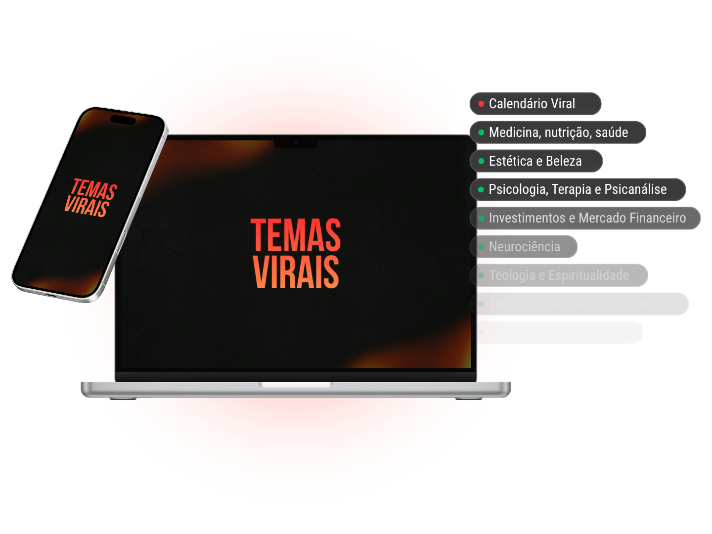
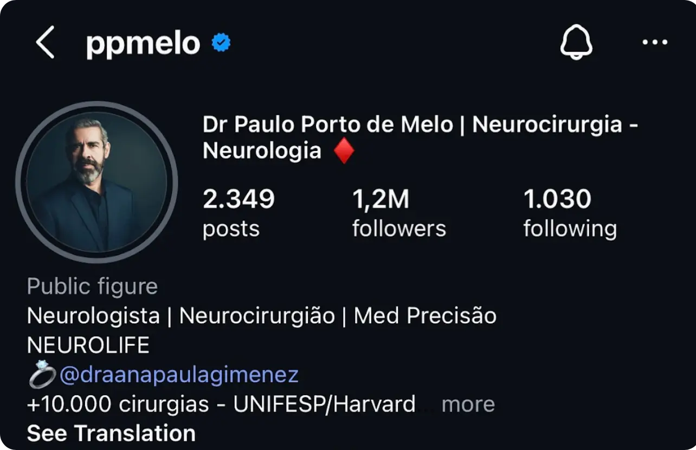
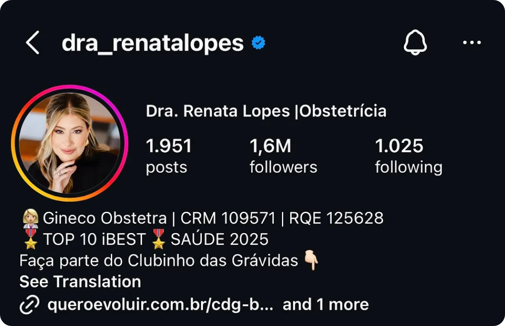

O maior erro de quem produz conteúdo é falar sobre assuntos que as pessoas não querem ouvir... O Temas Virais resolve isso. São +440 temas divididos por nichos e um calendário de datas estratégicas para acessar e aplicar.
Quero viralizar!
Depois de escrever +120 roteiros por mês, eu finalmente descobri o 80/20 da produção de conteúdo: falar sobre os assuntos que as pessoas querem ouvir!
Quero acessar os temas virais!Já sentiu que ninguém liga para o que você posta nas redes sociais
Passou horas criando um conteúdo e, quando postou, não bateu nem 1.000 visualizações
Viu profissionais medíocres que têm menos conhecimento que você tendo mais sucesso
Postou um conteúdo e quis apagar logo em seguida porque não performou bem
Se você se identificou com alguma dessas situações, os Temas Virais é para você!
Quero acessar os temas virais!Funciona para qualquer nicho, área ou profissão...


+440 temas virais validados
Calendário viral
17 maiores nichos da Internet
De R$ 127,90
3x de R$ 9,96
ou R$ 27,90 à vista
Quero acessar os Temas Virais!Meu nome é Thomas Carvalho, sou copywriter há cinco anos e escrevo entre 75 e 120 roteiros por mês para alguns dos maiores nomes do mercado digital brasileiro. Não conto isso para te impressionar… Conto porque o método que está dentro deste curso é o mesmo que eu aplico no meu trabalho todos os dias. Hoje, escrever roteiros virais e posicionar especialistas no digital é o que eu faço de melhor… E é o que vou te ensinar aqui.
Quero aplicar os Temas Virais!